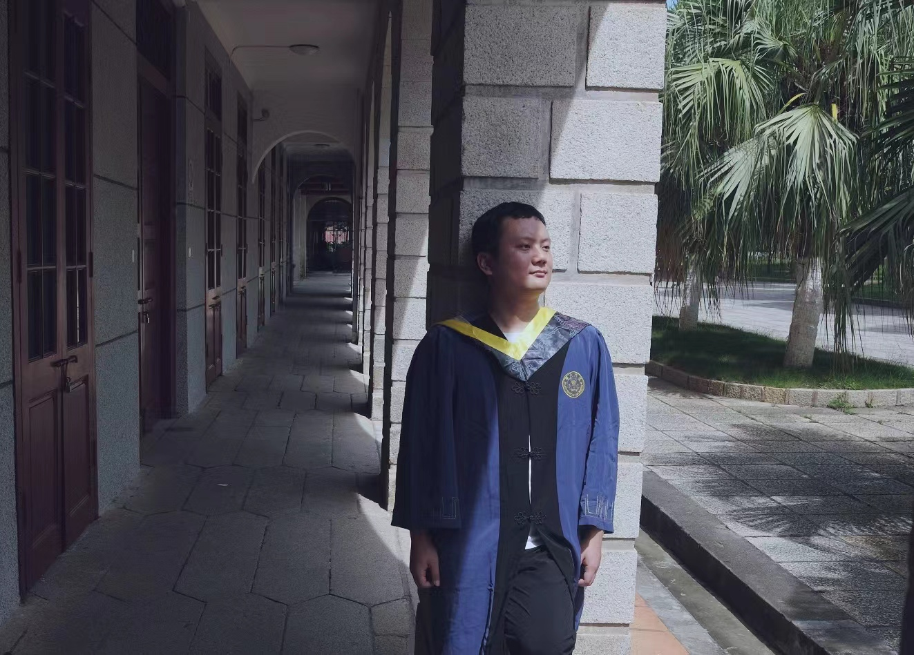
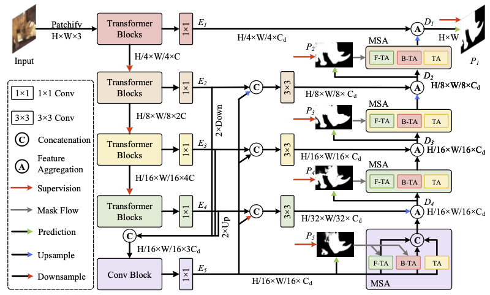

Xu-Ying Zhang 张旭迎Ph.D Student at Nankai University
Address: 441, College of Computer Science, Jinnan Campus |
 |
Biography [back top]
I am currently a first-year Ph.D. student at Nankai University and a member of Media Computing Lab, supervised by Prof. Mingming Cheng. Earlier, I obtained my M.S. degree under the supervision of Prof. Xiaoshuai Sun and Prof. Rongrong Ji at Xiamen University. The outline of my experience is as follows:
- 09/2022 -- Present: Ph.D. Student in Computer Science, Nankai University, Tianjin, China.
- 09/2019 -- 06/2022: M.S. in Computer Science, Xiamen University, Xiamen, China.
- 03/2021 -- 09/2021: Research Intern, JD AI Research, Beijing, China.
- 09/2016 -- 06/2019: Member of Excellent Student Class (优秀生班), Hebei University of Technology, Tianjin, China.
- 09/2015 -- 06/2019: B.S. in Software Engineering, Hebei University of Technology, Tianjin, China.
My research interests include deep learning, visual attention, multimedia content analysis and retrieval. More recently, I focus on the following aspects:
- Multimodal learning, especially on vision and language.
- Salient Object Detection (SOD) and Camouflaged Object Detection (COD).
- Diffusion Model.
Latest News [back top]
- 05/2022: I passed my master's graduation defense.
- 03/2022: One paper was accepted by CVPR 2022.
- 03/2021: One paper was accepted by CVPR 2021.
Publications [back top]
Journal
Conference
03 |
Mingrui Wu, Xuying Zhang (co-first author), Xiaoshuai Sun✉, Yiyi Zhou, Chao chen, Jiaxin Gu, Xing Sun, Rongrong Ji
DIFNet: Boosting Visual Information Flow for Image Captioning IEEE/CVF Conference on Computer Vision and Pattern Recognition (CVPR), 2022, CCF-A [paper] [code (10+ star)] [BibTex] |
02 |
Xuying Zhang, Xiaoshuai Sun✉, Yunpeng Luo, Jiayi Ji, Yiyi Zhou, Yongjian Wu, Feiyue Huang, Rongrong Ji
RSTNet: Captioning with Adaptive Attention on Visual and Non-Visual Words IEEE/CVF Conference on Computer Vision and Pattern Recognition (CVPR), 2021, CCF-A [paper] [code (90+ star)] [BibTex] |
01 |
Xiaoshuai Sun (supervisor), Xuying Zhang, Liujuan Cao✉, Yongjian Wu, Feiyue Huang, Rongrong Ji
Exploring Language Prior for Mode-Sensitive Visual Attention Modeling Proceedings of the 28th ACM International Conference on Multimedia (ACM MM 2020), CCF-A [paper] [code (5 star)] [BibTex] |
Preprint
| 02 | Bowen Yin, Xuying Zhang (co-first author), Qibin Hou✉, Boyuan Sun, Dengping Fan, Luc Van Gool
CamoFormer: Masked Separable Attention for Camouflaged Object Detection arXiv preprint arXiv:2212.06570 (journal paper in submitting) [paper] [code (30+ star)] [BibTex] |
01 |
Mingrui Wu, Xuying Zhang, Xiaoshuai Sun✉, Rongrong Ji, et al.
DATNet: Depth-Aware Transformer for Image Captioning [paper coming] [code coming] |
Thesis
|
02. Visual Position Embedding and Adaptive Word Measuring for Image Captioning (基于视觉位置编码和动态词性度量的图像自动描述) [Master] |
|
01. Image Feature Detection and Extraction Based on Deep Learning (基于深度学习的图像特征检测与提取) [Undergraduate] |
Professional Activities [back top]
- Conference Reviewer
- IEEE/CVF Computer Vision and Pattern Recognition (CVPR), 2023.
- IEEE International Conference on Computer Vision (ICCV), 2023.
- Teaching Assistant
- Assembly language programming, Xiamen University, Spring 2021.
Honors & Awards [back top]
- Excellent Graduate, Xiamen University, 2022
- National Scholarship, The Chinese Ministry of Education, 2021.
- National Scholarship, The Chinese Ministry of Education, 2020.
- Excellent Graduation Thesis, Hebei University of Technology, 2019.
- National Second Prize, Contemporary Undergraduate Mathematical Contest in Modeling, 2017.
- Second Prize, Tianjin College Student Mathematics Competition, 2016.
Research Collaborators [back top]
- Xiamen University
- Rongrong Ji (纪荣嵘), Professor, Distinguished Young Scholars
- Xiaoshuai Sun (孙晓帅), Associate Professor
- Yiyi Zhou (周奕毅), Associate Professor
- Jiayi Ji (纪家沂), Post-doc
- Mingrui Wu (吴明瑞), Master Student
- Nankai University
- Qibin Hou (侯淇彬), Associate Professor
- Bowen Yin (尹博文), Master Student